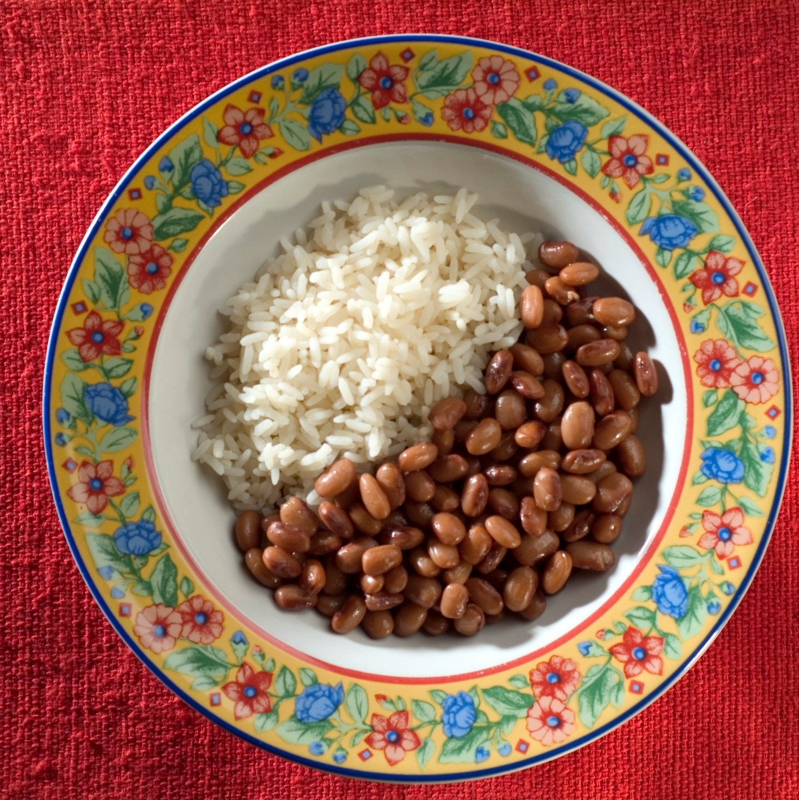

Arroz e Feijão

Descrição
Um clássico prato brasileiro, a combinação perfeita de arroz e feijão cozidos, formando uma base fundamental na rica culinária do país. Suas simplicidade e sustância o tornam um pilar na mesa de muitos lares.
ingredientes
- 2 xícaras de arroz
- 1 xícara de feijão (preto ou carioca)
- 1 cebola média, picada
- 2 dentes de alho, picados
- 1 colher de sopa de óleo vegetal
- Sal a gosto
- Água para o cozimento
Etapas
- Em uma panela, aqueça o óleo e refogue a cebola e o alho até dourarem.
- Adicione o arroz e mexa por alguns minutos até que fique levemente dourado.
- Acrescente o feijão previamente cozido (ou de uma lata, escorrido e lavado) ao arroz na panela.
- Adicione água suficiente para o cozimento, seguindo as instruções do arroz.
- Tempere com sal a gosto e misture bem.
- Deixe ferver, reduza o fogo para médio, tampe a panela e cozinhe até que o arroz esteja macio e a água tenha sido absorvida.
- Após o cozimento, deixe descansar por alguns minutos antes de servir.